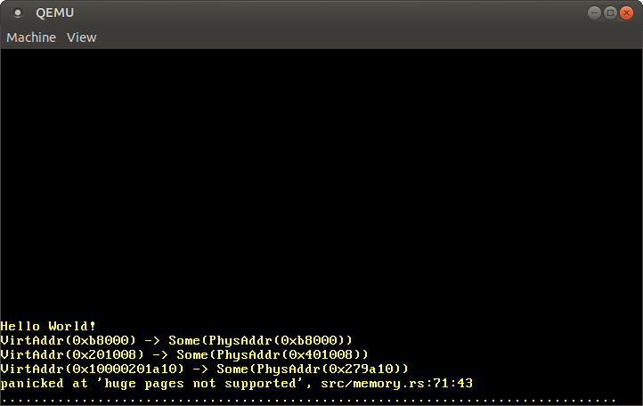

Paging Implementation
This post shows how to implement paging support in our kernel. It first explores different techniques to make the physical page table frames accessible to the kernel and discusses their respective advantages and drawbacks. It then implements an address translation function and a function to create a new mapping.
This blog is openly developed on GitHub. If you have any problems or questions, please open an issue there. You can also leave comments at the bottom. The complete source code for this post can be found in the post-09 branch.
Table of Contents
üîóIntroduction
The previous post gave an introduction to the concept of paging. It motivated paging by comparing it with segmentation, explained how paging and page tables work, and then introduced the 4-level page table design of x86_64. We found out that the bootloader already set up a page table hierarchy for our kernel, which means that our kernel already runs on virtual addresses. This improves safety since illegal memory accesses cause page fault exceptions instead of modifying arbitrary physical memory.
The post ended with the problem that we can’t access the page tables from our kernel because they are stored in physical memory and our kernel already runs on virtual addresses. This post explores different approaches to making the page table frames accessible to our kernel. We will discuss the advantages and drawbacks of each approach and then decide on an approach for our kernel.
To implement the approach, we will need support from the bootloader, so we’ll configure it first. Afterward, we will implement a function that traverses the page table hierarchy in order to translate virtual to physical addresses. Finally, we learn how to create new mappings in the page tables and how to find unused memory frames for creating new page tables.
üîóAccessing Page Tables
Accessing the page tables from our kernel is not as easy as it may seem. To understand the problem, let’s take a look at the example 4-level page table hierarchy from the previous post again:

The important thing here is that each page entry stores the physical address of the next table. This avoids the need to run a translation for these addresses too, which would be bad for performance and could easily cause endless translation loops.
The problem for us is that we can’t directly access physical addresses from our kernel since our kernel also runs on top of virtual addresses. For example, when we access address 4 KiB we access the virtual address 4 KiB, not the physical address 4 KiB where the level 4 page table is stored. When we want to access the physical address 4 KiB, we can only do so through some virtual address that maps to it.
So in order to access page table frames, we need to map some virtual pages to them. There are different ways to create these mappings that all allow us to access arbitrary page table frames.
üîóIdentity Mapping
A simple solution is to identity map all page tables:
In this example, we see various identity-mapped page table frames. This way, the physical addresses of page tables are also valid virtual addresses so that we can easily access the page tables of all levels starting from the CR3 register.
However, it clutters the virtual address space and makes it more difficult to find continuous memory regions of larger sizes. For example, imagine that we want to create a virtual memory region of size 1000 KiB in the above graphic, e.g., for memory-mapping a file. We can’t start the region at 28 KiB because it would collide with the already mapped page at 1004 KiB. So we have to look further until we find a large enough unmapped area, for example at 1008 KiB. This is a similar fragmentation problem as with segmentation.
Equally, it makes it much more difficult to create new page tables because we need to find physical frames whose corresponding pages aren’t already in use. For example, let’s assume that we reserved the virtual 1000 KiB memory region starting at 1008 KiB for our memory-mapped file. Now we can’t use any frame with a physical address between 1000 KiB and 2008 KiB anymore, because we can’t identity map it.
üîóMap at a Fixed Offset
To avoid the problem of cluttering the virtual address space, we can use a separate memory region for page table mappings. So instead of identity mapping page table frames, we map them at a fixed offset in the virtual address space. For example, the offset could be 10 TiB:

By using the virtual memory in the range 10 TiB..(10 TiB + physical memory size) exclusively for page table mappings, we avoid the collision problems of the identity mapping. Reserving such a large region of the virtual address space is only possible if the virtual address space is much larger than the physical memory size. This isn’t a problem on x86_64 since the 48-bit address space is 256 TiB large.
This approach still has the disadvantage that we need to create a new mapping whenever we create a new page table. Also, it does not allow accessing page tables of other address spaces, which would be useful when creating a new process.
üîóMap the Complete Physical Memory
We can solve these problems by mapping the complete physical memory instead of only page table frames:

This approach allows our kernel to access arbitrary physical memory, including page table frames of other address spaces. The reserved virtual memory range has the same size as before, with the difference that it no longer contains unmapped pages.
The disadvantage of this approach is that additional page tables are needed for storing the mapping of the physical memory. These page tables need to be stored somewhere, so they use up a part of physical memory, which can be a problem on devices with a small amount of memory.
On x86_64, however, we can use huge pages with a size of 2 MiB for the mapping, instead of the default 4 KiB pages. This way, mapping 32 GiB of physical memory only requires 132 KiB for page tables since only one level 3 table and 32 level 2 tables are needed. Huge pages are also more cache efficient since they use fewer entries in the translation lookaside buffer (TLB).
üîóTemporary Mapping
For devices with very small amounts of physical memory, we could map the page table frames only temporarily when we need to access them. To be able to create the temporary mappings, we only need a single identity-mapped level 1 table:

The level 1 table in this graphic controls the first 2 MiB of the virtual address space. This is because it is reachable by starting at the CR3 register and following the 0th entry in the level 4, level 3, and level 2 page tables. The entry with index 8 maps the virtual page at address 32 KiB to the physical frame at address 32 KiB, thereby identity mapping the level 1 table itself. The graphic shows this identity-mapping by the horizontal arrow at 32 KiB.
By writing to the identity-mapped level 1 table, our kernel can create up to 511 temporary mappings (512 minus the entry required for the identity mapping). In the above example, the kernel created two temporary mappings:
- By mapping the 0th entry of the level 1 table to the frame with address
24 KiB, it created a temporary mapping of the virtual page at0 KiBto the physical frame of the level 2 page table, indicated by the dashed arrow. - By mapping the 9th entry of the level 1 table to the frame with address
4 KiB, it created a temporary mapping of the virtual page at36 KiBto the physical frame of the level 4 page table, indicated by the dashed arrow.
Now the kernel can access the level 2 page table by writing to page 0 KiB and the level 4 page table by writing to page 36 KiB.
The process for accessing an arbitrary page table frame with temporary mappings would be:
- Search for a free entry in the identity-mapped level 1 table.
- Map that entry to the physical frame of the page table that we want to access.
- Access the target frame through the virtual page that maps to the entry.
- Set the entry back to unused, thereby removing the temporary mapping again.
This approach reuses the same 512 virtual pages for creating the mappings and thus requires only 4 KiB of physical memory. The drawback is that it is a bit cumbersome, especially since a new mapping might require modifications to multiple table levels, which means that we would need to repeat the above process multiple times.
üîóRecursive Page Tables
Another interesting approach, which requires no additional page tables at all, is to map the page table recursively. The idea behind this approach is to map an entry from the level 4 page table to the level 4 table itself. By doing this, we effectively reserve a part of the virtual address space and map all current and future page table frames to that space.
Let’s go through an example to understand how this all works:

The only difference to the example at the beginning of this post is the additional entry at index 511 in the level 4 table, which is mapped to physical frame 4 KiB, the frame of the level 4 table itself.
By letting the CPU follow this entry on a translation, it doesn’t reach a level 3 table but the same level 4 table again. This is similar to a recursive function that calls itself, therefore this table is called a recursive page table. The important thing is that the CPU assumes that every entry in the level 4 table points to a level 3 table, so it now treats the level 4 table as a level 3 table. This works because tables of all levels have the exact same layout on x86_64.
By following the recursive entry one or multiple times before we start the actual translation, we can effectively shorten the number of levels that the CPU traverses. For example, if we follow the recursive entry once and then proceed to the level 3 table, the CPU thinks that the level 3 table is a level 2 table. Going further, it treats the level 2 table as a level 1 table and the level 1 table as the mapped frame. This means that we can now read and write the level 1 page table because the CPU thinks that it is the mapped frame. The graphic below illustrates the five translation steps:

Similarly, we can follow the recursive entry twice before starting the translation to reduce the number of traversed levels to two:

Let’s go through it step by step: First, the CPU follows the recursive entry on the level 4 table and thinks that it reaches a level 3 table. Then it follows the recursive entry again and thinks that it reaches a level 2 table. But in reality, it is still on the level 4 table. When the CPU now follows a different entry, it lands on a level 3 table but thinks it is already on a level 1 table. So while the next entry points to a level 2 table, the CPU thinks that it points to the mapped frame, which allows us to read and write the level 2 table.
Accessing the tables of levels 3 and 4 works in the same way. To access the level 3 table, we follow the recursive entry three times, tricking the CPU into thinking it is already on a level 1 table. Then we follow another entry and reach a level 3 table, which the CPU treats as a mapped frame. For accessing the level 4 table itself, we just follow the recursive entry four times until the CPU treats the level 4 table itself as the mapped frame (in blue in the graphic below).

It might take some time to wrap your head around the concept, but it works quite well in practice.
In the section below, we explain how to construct virtual addresses for following the recursive entry one or multiple times. We will not use recursive paging for our implementation, so you don’t need to read it to continue with the post. If it interests you, just click on “Address Calculation” to expand it.
Address Calculation
We saw that we can access tables of all levels by following the recursive entry once or multiple times before the actual translation. Since the indexes into the tables of the four levels are derived directly from the virtual address, we need to construct special virtual addresses for this technique. Remember, the page table indexes are derived from the address in the following way:

Let’s assume that we want to access the level 1 page table that maps a specific page. As we learned above, this means that we have to follow the recursive entry once before continuing with the level 4, level 3, and level 2 indexes. To do that, we move each block of the address one block to the right and set the original level 4 index to the index of the recursive entry:

For accessing the level 2 table of that page, we move each index block two blocks to the right and set both the blocks of the original level 4 index and the original level 3 index to the index of the recursive entry:
Accessing the level 3 table works by moving each block three blocks to the right and using the recursive index for the original level 4, level 3, and level 2 address blocks:

Finally, we can access the level 4 table by moving each block four blocks to the right and using the recursive index for all address blocks except for the offset:

We can now calculate virtual addresses for the page tables of all four levels. We can even calculate an address that points exactly to a specific page table entry by multiplying its index by 8, the size of a page table entry.
The table below summarizes the address structure for accessing the different kinds of frames:
| Virtual Address for | Address Structure (octal) |
|---|---|
| Page | 0o_SSSSSS_AAA_BBB_CCC_DDD_EEEE |
| Level 1 Table Entry | 0o_SSSSSS_RRR_AAA_BBB_CCC_DDDD |
| Level 2 Table Entry | 0o_SSSSSS_RRR_RRR_AAA_BBB_CCCC |
| Level 3 Table Entry | 0o_SSSSSS_RRR_RRR_RRR_AAA_BBBB |
| Level 4 Table Entry | 0o_SSSSSS_RRR_RRR_RRR_RRR_AAAA |
Whereas AAA is the level 4 index, BBB the level 3 index, CCC the level 2 index, and DDD the level 1 index of the mapped frame, and EEEE the offset into it. RRR is the index of the recursive entry. When an index (three digits) is transformed to an offset (four digits), it is done by multiplying it by 8 (the size of a page table entry). With this offset, the resulting address directly points to the respective page table entry.
SSSSSS are sign extension bits, which means that they are all copies of bit 47. This is a special requirement for valid addresses on the x86_64 architecture. We explained it in the previous post.
We use octal numbers for representing the addresses since each octal character represents three bits, which allows us to clearly separate the 9-bit indexes of the different page table levels. This isn’t possible with the hexadecimal system, where each character represents four bits.
üîóIn Rust Code
To construct such addresses in Rust code, you can use bitwise operations:
// the virtual address whose corresponding page tables you want to access
let addr: usize = […];
let r = 0o777; // recursive index
let sign = 0o177777 << 48; // sign extension
// retrieve the page table indices of the address that we want to translate
let l4_idx = (addr >> 39) & 0o777; // level 4 index
let l3_idx = (addr >> 30) & 0o777; // level 3 index
let l2_idx = (addr >> 21) & 0o777; // level 2 index
let l1_idx = (addr >> 12) & 0o777; // level 1 index
let page_offset = addr & 0o7777;
// calculate the table addresses
let level_4_table_addr =
sign | (r << 39) | (r << 30) | (r << 21) | (r << 12);
let level_3_table_addr =
sign | (r << 39) | (r << 30) | (r << 21) | (l4_idx << 12);
let level_2_table_addr =
sign | (r << 39) | (r << 30) | (l4_idx << 21) | (l3_idx << 12);
let level_1_table_addr =
sign | (r << 39) | (l4_idx << 30) | (l3_idx << 21) | (l2_idx << 12);
The above code assumes that the last level 4 entry with index 0o777 (511) is recursively mapped. This isn’t the case currently, so the code won’t work yet. See below on how to tell the bootloader to set up the recursive mapping.
Alternatively to performing the bitwise operations by hand, you can use the RecursivePageTable type of the x86_64 crate, which provides safe abstractions for various page table operations. For example, the code below shows how to translate a virtual address to its mapped physical address:
// in src/memory.rs
use x86_64::structures::paging::{Mapper, Page, PageTable, RecursivePageTable};
use x86_64::{VirtAddr, PhysAddr};
/// Creates a RecursivePageTable instance from the level 4 address.
let level_4_table_addr = […];
let level_4_table_ptr = level_4_table_addr as *mut PageTable;
let recursive_page_table = unsafe {
let level_4_table = &mut *level_4_table_ptr;
RecursivePageTable::new(level_4_table).unwrap();
}
/// Retrieve the physical address for the given virtual address
let addr: u64 = […]
let addr = VirtAddr::new(addr);
let page: Page = Page::containing_address(addr);
// perform the translation
let frame = recursive_page_table.translate_page(page);
frame.map(|frame| frame.start_address() + u64::from(addr.page_offset()))
Again, a valid recursive mapping is required for this code. With such a mapping, the missing level_4_table_addr can be calculated as in the first code example.
Recursive Paging is an interesting technique that shows how powerful a single mapping in a page table can be. It is relatively easy to implement and only requires a minimal amount of setup (just a single recursive entry), so it’s a good choice for first experiments with paging.
However, it also has some disadvantages:
- It occupies a large amount of virtual memory (512 GiB). This isn’t a big problem in the large 48-bit address space, but it might lead to suboptimal cache behavior.
- It only allows accessing the currently active address space easily. Accessing other address spaces is still possible by changing the recursive entry, but a temporary mapping is required for switching back. We described how to do this in the (outdated) Remap The Kernel post.
- It heavily relies on the page table format of x86 and might not work on other architectures.
üîóBootloader Support
All of these approaches require page table modifications for their setup. For example, mappings for the physical memory need to be created or an entry of the level 4 table needs to be mapped recursively. The problem is that we can’t create these required mappings without an existing way to access the page tables.
This means that we need the help of the bootloader, which creates the page tables that our kernel runs on. The bootloader has access to the page tables, so it can create any mappings that we need. In its current implementation, the bootloader crate has support for two of the above approaches, controlled through cargo features:
- The
map_physical_memoryfeature maps the complete physical memory somewhere into the virtual address space. Thus, the kernel has access to all physical memory and can follow the Map the Complete Physical Memory approach. - With the
recursive_page_tablefeature, the bootloader maps an entry of the level 4 page table recursively. This allows the kernel to access the page tables as described in the Recursive Page Tables section.
We choose the first approach for our kernel since it is simple, platform-independent, and more powerful (it also allows access to non-page-table-frames). To enable the required bootloader support, we add the map_physical_memory feature to our bootloader dependency:
[dependencies]
bootloader = { version = "0.9.23", features = ["map_physical_memory"]}
With this feature enabled, the bootloader maps the complete physical memory to some unused virtual address range. To communicate the virtual address range to our kernel, the bootloader passes a boot information structure.
üîóBoot Information
The bootloader crate defines a BootInfo struct that contains all the information it passes to our kernel. The struct is still in an early stage, so expect some breakage when updating to future semver-incompatible bootloader versions. With the map_physical_memory feature enabled, it currently has the two fields memory_map and physical_memory_offset:
- The
memory_mapfield contains an overview of the available physical memory. This tells our kernel how much physical memory is available in the system and which memory regions are reserved for devices such as the VGA hardware. The memory map can be queried from the BIOS or UEFI firmware, but only very early in the boot process. For this reason, it must be provided by the bootloader because there is no way for the kernel to retrieve it later. We will need the memory map later in this post. - The
physical_memory_offsettells us the virtual start address of the physical memory mapping. By adding this offset to a physical address, we get the corresponding virtual address. This allows us to access arbitrary physical memory from our kernel. - This physical memory offset can be customized by adding a
[package.metadata.bootloader]table in Cargo.toml and setting the fieldphysical-memory-offset = "0x0000f00000000000"(or any other value). However, note that the bootloader can panic if it runs into physical address values that start to overlap with the the space beyond the offset, i.e., areas it would have previously mapped to some other early physical addresses. So in general, the higher the value (> 1 TiB), the better.
The bootloader passes the BootInfo struct to our kernel in the form of a &'static BootInfo argument to our _start function. We don’t have this argument declared in our function yet, so let’s add it:
// in src/main.rs
use bootloader::BootInfo;
#[no_mangle]
pub extern "C" fn _start(boot_info: &'static BootInfo) -> ! { // new argument
[…]
}
It wasn’t a problem to leave off this argument before because the x86_64 calling convention passes the first argument in a CPU register. Thus, the argument is simply ignored when it isn’t declared. However, it would be a problem if we accidentally used a wrong argument type, since the compiler doesn’t know the correct type signature of our entry point function.
üîóThe entry_point Macro
Since our _start function is called externally from the bootloader, no checking of our function signature occurs. This means that we could let it take arbitrary arguments without any compilation errors, but it would fail or cause undefined behavior at runtime.
To make sure that the entry point function always has the correct signature that the bootloader expects, the bootloader crate provides an entry_point macro that provides a type-checked way to define a Rust function as the entry point. Let’s rewrite our entry point function to use this macro:
// in src/main.rs
use bootloader::{BootInfo, entry_point};
entry_point!(kernel_main);
fn kernel_main(boot_info: &'static BootInfo) -> ! {
[…]
}
We no longer need to use extern "C" or no_mangle for our entry point, as the macro defines the real lower level _start entry point for us. The kernel_main function is now a completely normal Rust function, so we can choose an arbitrary name for it. The important thing is that it is type-checked so that a compilation error occurs when we use a wrong function signature, for example by adding an argument or changing the argument type.
Let’s perform the same change in our lib.rs:
// in src/lib.rs
#[cfg(test)]
use bootloader::{entry_point, BootInfo};
#[cfg(test)]
entry_point!(test_kernel_main);
/// Entry point for `cargo test`
#[cfg(test)]
fn test_kernel_main(_boot_info: &'static BootInfo) -> ! {
// like before
init();
test_main();
hlt_loop();
}
Since the entry point is only used in test mode, we add the #[cfg(test)] attribute to all items. We give our test entry point the distinct name test_kernel_main to avoid confusion with the kernel_main of our main.rs. We don’t use the BootInfo parameter for now, so we prefix the parameter name with a _ to silence the unused variable warning.
üîóImplementation
Now that we have access to physical memory, we can finally start to implement our page table code. First, we will take a look at the currently active page tables that our kernel runs on. In the second step, we will create a translation function that returns the physical address that a given virtual address is mapped to. As a last step, we will try to modify the page tables in order to create a new mapping.
Before we begin, we create a new memory module for our code:
// in src/lib.rs
pub mod memory;
For the module, we create an empty src/memory.rs file.
üîóAccessing the Page Tables
At the end of the previous post, we tried to take a look at the page tables our kernel runs on, but failed since we couldn’t access the physical frame that the CR3 register points to. We’re now able to continue from there by creating an active_level_4_table function that returns a reference to the active level 4 page table:
// in src/memory.rs
use x86_64::{
structures::paging::PageTable,
VirtAddr,
};
/// Returns a mutable reference to the active level 4 table.
///
/// This function is unsafe because the caller must guarantee that the
/// complete physical memory is mapped to virtual memory at the passed
/// `physical_memory_offset`. Also, this function must be only called once
/// to avoid aliasing `&mut` references (which is undefined behavior).
pub unsafe fn active_level_4_table(physical_memory_offset: VirtAddr)
-> &'static mut PageTable
{
use x86_64::registers::control::Cr3;
let (level_4_table_frame, _) = Cr3::read();
let phys = level_4_table_frame.start_address();
let virt = physical_memory_offset + phys.as_u64();
let page_table_ptr: *mut PageTable = virt.as_mut_ptr();
&mut *page_table_ptr // unsafe
}
First, we read the physical frame of the active level 4 table from the CR3 register. We then take its physical start address, convert it to a u64, and add it to physical_memory_offset to get the virtual address where the page table frame is mapped. Finally, we convert the virtual address to a *mut PageTable raw pointer through the as_mut_ptr method and then unsafely create a &mut PageTable reference from it. We create a &mut reference instead of a & reference because we will mutate the page tables later in this post.
We don’t need to use an unsafe block here because Rust treats the complete body of an unsafe fn like a large unsafe block. This makes our code more dangerous since we could accidentally introduce an unsafe operation in previous lines without noticing. It also makes it much more difficult to spot unsafe operations in between safe operations. There is an RFC to change this behavior.
We can now use this function to print the entries of the level 4 table:
// in src/main.rs
fn kernel_main(boot_info: &'static BootInfo) -> ! {
use blog_os::memory::active_level_4_table;
use x86_64::VirtAddr;
println!("Hello World{}", "!");
blog_os::init();
let phys_mem_offset = VirtAddr::new(boot_info.physical_memory_offset);
let l4_table = unsafe { active_level_4_table(phys_mem_offset) };
for (i, entry) in l4_table.iter().enumerate() {
if !entry.is_unused() {
println!("L4 Entry {}: {:?}", i, entry);
}
}
// as before
#[cfg(test)]
test_main();
println!("It did not crash!");
blog_os::hlt_loop();
}
First, we convert the physical_memory_offset of the BootInfo struct to a VirtAddr and pass it to the active_level_4_table function. We then use the iter function to iterate over the page table entries and the enumerate combinator to additionally add an index i to each element. We only print non-empty entries because all 512 entries wouldn’t fit on the screen.
When we run it, we see the following output:
We see that there are various non-empty entries, which all map to different level 3 tables. There are so many regions because kernel code, kernel stack, physical memory mapping, and boot information all use separate memory areas.
To traverse the page tables further and take a look at a level 3 table, we can take the mapped frame of an entry and convert it to a virtual address again:
// in the `for` loop in src/main.rs
use x86_64::structures::paging::PageTable;
if !entry.is_unused() {
println!("L4 Entry {}: {:?}", i, entry);
// get the physical address from the entry and convert it
let phys = entry.frame().unwrap().start_address();
let virt = phys.as_u64() + boot_info.physical_memory_offset;
let ptr = VirtAddr::new(virt).as_mut_ptr();
let l3_table: &PageTable = unsafe { &*ptr };
// print non-empty entries of the level 3 table
for (i, entry) in l3_table.iter().enumerate() {
if !entry.is_unused() {
println!(" L3 Entry {}: {:?}", i, entry);
}
}
}
For looking at the level 2 and level 1 tables, we repeat that process for the level 3 and level 2 entries. As you can imagine, this gets very verbose very quickly, so we don’t show the full code here.
Traversing the page tables manually is interesting because it helps to understand how the CPU performs the translation. However, most of the time, we are only interested in the mapped physical address for a given virtual address, so let’s create a function for that.
üîóTranslating Addresses
To translate a virtual to a physical address, we have to traverse the four-level page table until we reach the mapped frame. Let’s create a function that performs this translation:
// in src/memory.rs
use x86_64::PhysAddr;
/// Translates the given virtual address to the mapped physical address, or
/// `None` if the address is not mapped.
///
/// This function is unsafe because the caller must guarantee that the
/// complete physical memory is mapped to virtual memory at the passed
/// `physical_memory_offset`.
pub unsafe fn translate_addr(addr: VirtAddr, physical_memory_offset: VirtAddr)
-> Option<PhysAddr>
{
translate_addr_inner(addr, physical_memory_offset)
}
We forward the function to a safe translate_addr_inner function to limit the scope of unsafe. As we noted above, Rust treats the complete body of an unsafe fn like a large unsafe block. By calling into a private safe function, we make each unsafe operation explicit again.
The private inner function contains the real implementation:
// in src/memory.rs
/// Private function that is called by `translate_addr`.
///
/// This function is safe to limit the scope of `unsafe` because Rust treats
/// the whole body of unsafe functions as an unsafe block. This function must
/// only be reachable through `unsafe fn` from outside of this module.
fn translate_addr_inner(addr: VirtAddr, physical_memory_offset: VirtAddr)
-> Option<PhysAddr>
{
use x86_64::structures::paging::page_table::FrameError;
use x86_64::registers::control::Cr3;
// read the active level 4 frame from the CR3 register
let (level_4_table_frame, _) = Cr3::read();
let table_indexes = [
addr.p4_index(), addr.p3_index(), addr.p2_index(), addr.p1_index()
];
let mut frame = level_4_table_frame;
// traverse the multi-level page table
for &index in &table_indexes {
// convert the frame into a page table reference
let virt = physical_memory_offset + frame.start_address().as_u64();
let table_ptr: *const PageTable = virt.as_ptr();
let table = unsafe {&*table_ptr};
// read the page table entry and update `frame`
let entry = &table[index];
frame = match entry.frame() {
Ok(frame) => frame,
Err(FrameError::FrameNotPresent) => return None,
Err(FrameError::HugeFrame) => panic!("huge pages not supported"),
};
}
// calculate the physical address by adding the page offset
Some(frame.start_address() + u64::from(addr.page_offset()))
}
Instead of reusing our active_level_4_table function, we read the level 4 frame from the CR3 register again. We do this because it simplifies this prototype implementation. Don’t worry, we will create a better solution in a moment.
The VirtAddr struct already provides methods to compute the indexes into the page tables of the four levels. We store these indexes in a small array because it allows us to traverse the page tables using a for loop. Outside of the loop, we remember the last visited frame to calculate the physical address later. The frame points to page table frames while iterating and to the mapped frame after the last iteration, i.e., after following the level 1 entry.
Inside the loop, we again use the physical_memory_offset to convert the frame into a page table reference. We then read the entry of the current page table and use the PageTableEntry::frame function to retrieve the mapped frame. If the entry is not mapped to a frame, we return None. If the entry maps a huge 2 MiB or 1 GiB page, we panic for now.
Let’s test our translation function by translating some addresses:
// in src/main.rs
fn kernel_main(boot_info: &'static BootInfo) -> ! {
// new import
use blog_os::memory::translate_addr;
[…] // hello world and blog_os::init
let phys_mem_offset = VirtAddr::new(boot_info.physical_memory_offset);
let addresses = [
// the identity-mapped vga buffer page
0xb8000,
// some code page
0x201008,
// some stack page
0x0100_0020_1a10,
// virtual address mapped to physical address 0
boot_info.physical_memory_offset,
];
for &address in &addresses {
let virt = VirtAddr::new(address);
let phys = unsafe { translate_addr(virt, phys_mem_offset) };
println!("{:?} -> {:?}", virt, phys);
}
[…] // test_main(), "it did not crash" printing, and hlt_loop()
}
When we run it, we see the following output:

As expected, the identity-mapped address 0xb8000 translates to the same physical address. The code page and the stack page translate to some arbitrary physical addresses, which depend on how the bootloader created the initial mapping for our kernel. It’s worth noting that the last 12 bits always stay the same after translation, which makes sense because these bits are the page offset and not part of the translation.
Since each physical address can be accessed by adding the physical_memory_offset, the translation of the physical_memory_offset address itself should point to physical address 0. However, the translation fails because the mapping uses huge pages for efficiency, which is not supported in our implementation yet.
üîóUsing OffsetPageTable
Translating virtual to physical addresses is a common task in an OS kernel, therefore the x86_64 crate provides an abstraction for it. The implementation already supports huge pages and several other page table functions apart from translate_addr, so we will use it in the following instead of adding huge page support to our own implementation.
At the basis of the abstraction are two traits that define various page table mapping functions:
- The
Mappertrait is generic over the page size and provides functions that operate on pages. Examples aretranslate_page, which translates a given page to a frame of the same size, andmap_to, which creates a new mapping in the page table. - The
Translatetrait provides functions that work with multiple page sizes, such astranslate_addror the generaltranslate.
The traits only define the interface, they don’t provide any implementation. The x86_64 crate currently provides three types that implement the traits with different requirements. The OffsetPageTable type assumes that the complete physical memory is mapped to the virtual address space at some offset. The MappedPageTable is a bit more flexible: It only requires that each page table frame is mapped to the virtual address space at a calculable address. Finally, the RecursivePageTable type can be used to access page table frames through recursive page tables.
In our case, the bootloader maps the complete physical memory at a virtual address specified by the physical_memory_offset variable, so we can use the OffsetPageTable type. To initialize it, we create a new init function in our memory module:
use x86_64::structures::paging::OffsetPageTable;
/// Initialize a new OffsetPageTable.
///
/// This function is unsafe because the caller must guarantee that the
/// complete physical memory is mapped to virtual memory at the passed
/// `physical_memory_offset`. Also, this function must be only called once
/// to avoid aliasing `&mut` references (which is undefined behavior).
pub unsafe fn init(physical_memory_offset: VirtAddr) -> OffsetPageTable<'static> {
let level_4_table = active_level_4_table(physical_memory_offset);
OffsetPageTable::new(level_4_table, physical_memory_offset)
}
// make private
unsafe fn active_level_4_table(physical_memory_offset: VirtAddr)
-> &'static mut PageTable
{…}
The function takes the physical_memory_offset as an argument and returns a new OffsetPageTable instance with a 'static lifetime. This means that the instance stays valid for the complete runtime of our kernel. In the function body, we first call the active_level_4_table function to retrieve a mutable reference to the level 4 page table. We then invoke the OffsetPageTable::new function with this reference. As the second parameter, the new function expects the virtual address at which the mapping of the physical memory starts, which is given in the physical_memory_offset variable.
The active_level_4_table function should only be called from the init function from now on because it can easily lead to aliased mutable references when called multiple times, which can cause undefined behavior. For this reason, we make the function private by removing the pub specifier.
We can now use the Translate::translate_addr method instead of our own memory::translate_addr function. We only need to change a few lines in our kernel_main:
// in src/main.rs
fn kernel_main(boot_info: &'static BootInfo) -> ! {
// new: different imports
use blog_os::memory;
use x86_64::{structures::paging::Translate, VirtAddr};
[…] // hello world and blog_os::init
let phys_mem_offset = VirtAddr::new(boot_info.physical_memory_offset);
// new: initialize a mapper
let mapper = unsafe { memory::init(phys_mem_offset) };
let addresses = […]; // same as before
for &address in &addresses {
let virt = VirtAddr::new(address);
// new: use the `mapper.translate_addr` method
let phys = mapper.translate_addr(virt);
println!("{:?} -> {:?}", virt, phys);
}
[…] // test_main(), "it did not crash" printing, and hlt_loop()
}
We need to import the Translate trait in order to use the translate_addr method it provides.
When we run it now, we see the same translation results as before, with the difference that the huge page translation now also works:

As expected, the translations of 0xb8000 and the code and stack addresses stay the same as with our own translation function. Additionally, we now see that the virtual address physical_memory_offset is mapped to the physical address 0x0.
By using the translation function of the MappedPageTable type, we can spare ourselves the work of implementing huge page support. We also have access to other page functions, such as map_to, which we will use in the next section.
At this point, we no longer need our memory::translate_addr and memory::translate_addr_inner functions, so we can delete them.
üîóCreating a new Mapping
Until now, we only looked at the page tables without modifying anything. Let’s change that by creating a new mapping for a previously unmapped page.
We will use the map_to function of the Mapper trait for our implementation, so let’s take a look at that function first. The documentation tells us that it takes four arguments: the page that we want to map, the frame that the page should be mapped to, a set of flags for the page table entry, and a frame_allocator. The frame allocator is needed because mapping the given page might require creating additional page tables, which need unused frames as backing storage.
üîóA create_example_mapping Function
The first step of our implementation is to create a new create_example_mapping function that maps a given virtual page to 0xb8000, the physical frame of the VGA text buffer. We choose that frame because it allows us to easily test if the mapping was created correctly: We just need to write to the newly mapped page and see whether we see the write appear on the screen.
The create_example_mapping function looks like this:
// in src/memory.rs
use x86_64::{
PhysAddr,
structures::paging::{Page, PhysFrame, Mapper, Size4KiB, FrameAllocator}
};
/// Creates an example mapping for the given page to frame `0xb8000`.
pub fn create_example_mapping(
page: Page,
mapper: &mut OffsetPageTable,
frame_allocator: &mut impl FrameAllocator<Size4KiB>,
) {
use x86_64::structures::paging::PageTableFlags as Flags;
let frame = PhysFrame::containing_address(PhysAddr::new(0xb8000));
let flags = Flags::PRESENT | Flags::WRITABLE;
let map_to_result = unsafe {
// FIXME: this is not safe, we do it only for testing
mapper.map_to(page, frame, flags, frame_allocator)
};
map_to_result.expect("map_to failed").flush();
}
In addition to the page that should be mapped, the function expects a mutable reference to an OffsetPageTable instance and a frame_allocator. The frame_allocator parameter uses the impl Trait syntax to be generic over all types that implement the FrameAllocator trait. The trait is generic over the PageSize trait to work with both standard 4 KiB pages and huge 2 MiB/1 GiB pages. We only want to create a 4 KiB mapping, so we set the generic parameter to Size4KiB.
The map_to method is unsafe because the caller must ensure that the frame is not already in use. The reason for this is that mapping the same frame twice could result in undefined behavior, for example when two different &mut references point to the same physical memory location. In our case, we reuse the VGA text buffer frame, which is already mapped, so we break the required condition. However, the create_example_mapping function is only a temporary testing function and will be removed after this post, so it is ok. To remind us of the unsafety, we put a FIXME comment on the line.
In addition to the page and the unused_frame, the map_to method takes a set of flags for the mapping and a reference to the frame_allocator, which will be explained in a moment. For the flags, we set the PRESENT flag because it is required for all valid entries and the WRITABLE flag to make the mapped page writable. For a list of all possible flags, see the Page Table Format section of the previous post.
The map_to function can fail, so it returns a Result. Since this is just some example code that does not need to be robust, we just use expect to panic when an error occurs. On success, the function returns a MapperFlush type that provides an easy way to flush the newly mapped page from the translation lookaside buffer (TLB) with its flush method. Like Result, the type uses the #[must_use] attribute to emit a warning when we accidentally forget to use it.
üîóA dummy FrameAllocator
To be able to call create_example_mapping, we need to create a type that implements the FrameAllocator trait first. As noted above, the trait is responsible for allocating frames for new page tables if they are needed by map_to.
Let’s start with the simple case and assume that we don’t need to create new page tables. For this case, a frame allocator that always returns None suffices. We create such an EmptyFrameAllocator for testing our mapping function:
// in src/memory.rs
/// A FrameAllocator that always returns `None`.
pub struct EmptyFrameAllocator;
unsafe impl FrameAllocator<Size4KiB> for EmptyFrameAllocator {
fn allocate_frame(&mut self) -> Option<PhysFrame> {
None
}
}
Implementing the FrameAllocator is unsafe because the implementer must guarantee that the allocator yields only unused frames. Otherwise, undefined behavior might occur, for example when two virtual pages are mapped to the same physical frame. Our EmptyFrameAllocator only returns None, so this isn’t a problem in this case.
üîóChoosing a Virtual Page
We now have a simple frame allocator that we can pass to our create_example_mapping function. However, the allocator always returns None, so this will only work if no additional page table frames are needed for creating the mapping. To understand when additional page table frames are needed and when not, let’s consider an example:

The graphic shows the virtual address space on the left, the physical address space on the right, and the page tables in between. The page tables are stored in physical memory frames, indicated by the dashed lines. The virtual address space contains a single mapped page at address 0x803fe00000, marked in blue. To translate this page to its frame, the CPU walks the 4-level page table until it reaches the frame at address 36 KiB.
Additionally, the graphic shows the physical frame of the VGA text buffer in red. Our goal is to map a previously unmapped virtual page to this frame using our create_example_mapping function. Since our EmptyFrameAllocator always returns None, we want to create the mapping so that no additional frames are needed from the allocator. This depends on the virtual page that we select for the mapping.
The graphic shows two candidate pages in the virtual address space, both marked in yellow. One page is at address 0x803fdfd000, which is 3 pages before the mapped page (in blue). While the level 4 and level 3 page table indices are the same as for the blue page, the level 2 and level 1 indices are different (see the previous post). The different index into the level 2 table means that a different level 1 table is used for this page. Since this level 1 table does not exist yet, we would need to create it if we chose that page for our example mapping, which would require an additional unused physical frame. In contrast, the second candidate page at address 0x803fe02000 does not have this problem because it uses the same level 1 page table as the blue page. Thus, all the required page tables already exist.
In summary, the difficulty of creating a new mapping depends on the virtual page that we want to map. In the easiest case, the level 1 page table for the page already exists and we just need to write a single entry. In the most difficult case, the page is in a memory region for which no level 3 exists yet, so we need to create new level 3, level 2 and level 1 page tables first.
For calling our create_example_mapping function with the EmptyFrameAllocator, we need to choose a page for which all page tables already exist. To find such a page, we can utilize the fact that the bootloader loads itself in the first megabyte of the virtual address space. This means that a valid level 1 table exists for all pages in this region. Thus, we can choose any unused page in this memory region for our example mapping, such as the page at address 0. Normally, this page should stay unused to guarantee that dereferencing a null pointer causes a page fault, so we know that the bootloader leaves it unmapped.
üîóCreating the Mapping
We now have all the required parameters for calling our create_example_mapping function, so let’s modify our kernel_main function to map the page at virtual address 0. Since we map the page to the frame of the VGA text buffer, we should be able to write to the screen through it afterward. The implementation looks like this:
// in src/main.rs
fn kernel_main(boot_info: &'static BootInfo) -> ! {
use blog_os::memory;
use x86_64::{structures::paging::Page, VirtAddr}; // new import
[…] // hello world and blog_os::init
let phys_mem_offset = VirtAddr::new(boot_info.physical_memory_offset);
let mut mapper = unsafe { memory::init(phys_mem_offset) };
let mut frame_allocator = memory::EmptyFrameAllocator;
// map an unused page
let page = Page::containing_address(VirtAddr::new(0));
memory::create_example_mapping(page, &mut mapper, &mut frame_allocator);
// write the string `New!` to the screen through the new mapping
let page_ptr: *mut u64 = page.start_address().as_mut_ptr();
unsafe { page_ptr.offset(400).write_volatile(0x_f021_f077_f065_f04e)};
[…] // test_main(), "it did not crash" printing, and hlt_loop()
}
We first create the mapping for the page at address 0 by calling our create_example_mapping function with a mutable reference to the mapper and the frame_allocator instances. This maps the page to the VGA text buffer frame, so we should see any write to it on the screen.
Then we convert the page to a raw pointer and write a value to offset 400. We don’t write to the start of the page because the top line of the VGA buffer is directly shifted off the screen by the next println. We write the value 0x_f021_f077_f065_f04e, which represents the string “New!” on a white background. As we learned in the “VGA Text Mode” post, writes to the VGA buffer should be volatile, so we use the write_volatile method.
When we run it in QEMU, we see the following output:

The “New!” on the screen is caused by our write to page 0, which means that we successfully created a new mapping in the page tables.
Creating that mapping only worked because the level 1 table responsible for the page at address 0 already exists. When we try to map a page for which no level 1 table exists yet, the map_to function fails because it tries to create new page tables by allocating frames with the EmptyFrameAllocator. We can see that happen when we try to map page 0xdeadbeaf000 instead of 0:
// in src/main.rs
fn kernel_main(boot_info: &'static BootInfo) -> ! {
[…]
let page = Page::containing_address(VirtAddr::new(0xdeadbeaf000));
[…]
}
When we run it, a panic with the following error message occurs:
panicked at 'map_to failed: FrameAllocationFailed', /…/result.rs:999:5
To map pages that don’t have a level 1 page table yet, we need to create a proper FrameAllocator. But how do we know which frames are unused and how much physical memory is available?
üîóAllocating Frames
In order to create new page tables, we need to create a proper frame allocator. To do that, we use the memory_map that is passed by the bootloader as part of the BootInfo struct:
// in src/memory.rs
use bootloader::bootinfo::MemoryMap;
/// A FrameAllocator that returns usable frames from the bootloader's memory map.
pub struct BootInfoFrameAllocator {
memory_map: &'static MemoryMap,
next: usize,
}
impl BootInfoFrameAllocator {
/// Create a FrameAllocator from the passed memory map.
///
/// This function is unsafe because the caller must guarantee that the passed
/// memory map is valid. The main requirement is that all frames that are marked
/// as `USABLE` in it are really unused.
pub unsafe fn init(memory_map: &'static MemoryMap) -> Self {
BootInfoFrameAllocator {
memory_map,
next: 0,
}
}
}
The struct has two fields: A 'static reference to the memory map passed by the bootloader and a next field that keeps track of the number of the next frame that the allocator should return.
As we explained in the Boot Information section, the memory map is provided by the BIOS/UEFI firmware. It can only be queried very early in the boot process, so the bootloader already calls the respective functions for us. The memory map consists of a list of MemoryRegion structs, which contain the start address, the length, and the type (e.g. unused, reserved, etc.) of each memory region.
The init function initializes a BootInfoFrameAllocator with a given memory map. The next field is initialized with 0 and will be increased for every frame allocation to avoid returning the same frame twice. Since we don’t know if the usable frames of the memory map were already used somewhere else, our init function must be unsafe to require additional guarantees from the caller.
üîóA usable_frames Method
Before we implement the FrameAllocator trait, we add an auxiliary method that converts the memory map into an iterator of usable frames:
// in src/memory.rs
use bootloader::bootinfo::MemoryRegionType;
impl BootInfoFrameAllocator {
/// Returns an iterator over the usable frames specified in the memory map.
fn usable_frames(&self) -> impl Iterator<Item = PhysFrame> {
// get usable regions from memory map
let regions = self.memory_map.iter();
let usable_regions = regions
.filter(|r| r.region_type == MemoryRegionType::Usable);
// map each region to its address range
let addr_ranges = usable_regions
.map(|r| r.range.start_addr()..r.range.end_addr());
// transform to an iterator of frame start addresses
let frame_addresses = addr_ranges.flat_map(|r| r.step_by(4096));
// create `PhysFrame` types from the start addresses
frame_addresses.map(|addr| PhysFrame::containing_address(PhysAddr::new(addr)))
}
}
This function uses iterator combinator methods to transform the initial MemoryMap into an iterator of usable physical frames:
- First, we call the
itermethod to convert the memory map to an iterator ofMemoryRegions. - Then we use the
filtermethod to skip any reserved or otherwise unavailable regions. The bootloader updates the memory map for all the mappings it creates, so frames that are used by our kernel (code, data, or stack) or to store the boot information are already marked asInUseor similar. Thus, we can be sure thatUsableframes are not used somewhere else. - Afterwards, we use the
mapcombinator and Rust’s range syntax to transform our iterator of memory regions to an iterator of address ranges. - Next, we use
flat_mapto transform the address ranges into an iterator of frame start addresses, choosing every 4096th address usingstep_by. Since 4096 bytes (= 4 KiB) is the page size, we get the start address of each frame. The bootloader page-aligns all usable memory areas so that we don’t need any alignment or rounding code here. By usingflat_mapinstead ofmap, we get anIterator<Item = u64>instead of anIterator<Item = Iterator<Item = u64>>. - Finally, we convert the start addresses to
PhysFrametypes to construct anIterator<Item = PhysFrame>.
The return type of the function uses the impl Trait feature. This way, we can specify that we return some type that implements the Iterator trait with item type PhysFrame but don’t need to name the concrete return type. This is important here because we can’t name the concrete type since it depends on unnamable closure types.
üîóImplementing the FrameAllocator Trait
Now we can implement the FrameAllocator trait:
// in src/memory.rs
unsafe impl FrameAllocator<Size4KiB> for BootInfoFrameAllocator {
fn allocate_frame(&mut self) -> Option<PhysFrame> {
let frame = self.usable_frames().nth(self.next);
self.next += 1;
frame
}
}
We first use the usable_frames method to get an iterator of usable frames from the memory map. Then, we use the Iterator::nth function to get the frame with index self.next (thereby skipping (self.next - 1) frames). Before returning that frame, we increase self.next by one so that we return the following frame on the next call.
This implementation is not quite optimal since it recreates the usable_frame allocator on every allocation. It would be better to directly store the iterator as a struct field instead. Then we wouldn’t need the nth method and could just call next on every allocation. The problem with this approach is that it’s not possible to store an impl Trait type in a struct field currently. It might work someday when named existential types are fully implemented.
üîóUsing the BootInfoFrameAllocator
We can now modify our kernel_main function to pass a BootInfoFrameAllocator instance instead of an EmptyFrameAllocator:
// in src/main.rs
fn kernel_main(boot_info: &'static BootInfo) -> ! {
use blog_os::memory::BootInfoFrameAllocator;
[…]
let mut frame_allocator = unsafe {
BootInfoFrameAllocator::init(&boot_info.memory_map)
};
[…]
}
With the boot info frame allocator, the mapping succeeds and we see the black-on-white “New!” on the screen again. Behind the scenes, the map_to method creates the missing page tables in the following way:
- Use the passed
frame_allocatorto allocate an unused frame. - Zero the frame to create a new, empty page table.
- Map the entry of the higher level table to that frame.
- Continue with the next table level.
While our create_example_mapping function is just some example code, we are now able to create new mappings for arbitrary pages. This will be essential for allocating memory or implementing multithreading in future posts.
At this point, we should delete the create_example_mapping function again to avoid accidentally invoking undefined behavior, as explained above.
üîóSummary
In this post we learned about different techniques to access the physical frames of page tables, including identity mapping, mapping of the complete physical memory, temporary mapping, and recursive page tables. We chose to map the complete physical memory since it’s simple, portable, and powerful.
We can’t map the physical memory from our kernel without page table access, so we need support from the bootloader. The bootloader crate supports creating the required mapping through optional cargo crate features. It passes the required information to our kernel in the form of a &BootInfo argument to our entry point function.
For our implementation, we first manually traversed the page tables to implement a translation function, and then used the MappedPageTable type of the x86_64 crate. We also learned how to create new mappings in the page table and how to create the necessary FrameAllocator on top of the memory map passed by the bootloader.
üîóWhat‚Äôs next?
The next post will create a heap memory region for our kernel, which will allow us to allocate memory and use various collection types.
Comments
Do you have a problem, want to share feedback, or discuss further ideas? Feel free to leave a comment here! Please stick to English and follow Rust's code of conduct. This comment thread directly maps to a discussion on GitHub, so you can also comment there if you prefer.
Instead of authenticating the giscus application, you can also comment directly on GitHub.